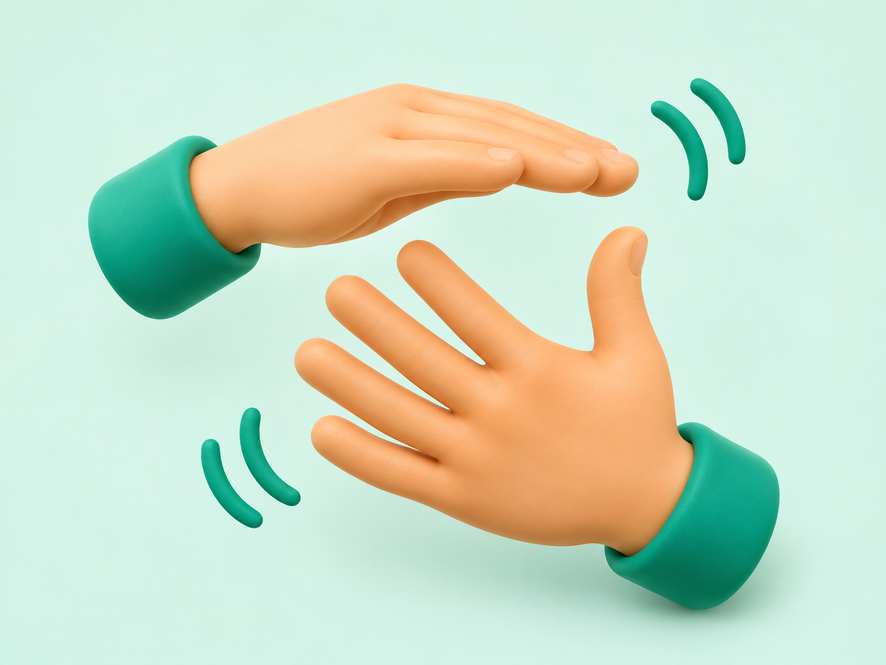

Primeiros passos
Conheça a Libras, a cultura surda e o papel da comunicação acessível no atendimento.
Etapa 1 de 3
O que é Libras?
Libras é a Língua Brasileira de Sinais. É uma língua visual e espacial, com gramática própria. Mãos, movimentos, expressões faciais e o uso do espaço ajudam a construir significado.
Explore os elementos da Libras
- Mãos e movimento
- Observe a forma das mãos e como elas se movem.
- Expressões faciais
- O rosto e o corpo podem ajudar a distinguir uma pergunta de uma afirmação.
- Uso do espaço
- Quem sinaliza pode estabelecer referências no espaço e retomá-las durante a conversa.

Cultura surda
A cultura surda inclui experiências, formas de expressão e vínculos construídos em comunidade. Cada pessoa tem sua própria história e suas preferências de comunicação.
Conheça a perspectiva de Júlia
Em uma situação fictícia, Júlia chega à recepção e explica sua preferência.
“Uso Libras. Para confirmar o horário, podemos escrever aqui.”
Ela indica como quer participar daquela conversa.

Comunicação acessível
Dirija-se à pessoa e pergunte como ela prefere se comunicar. Dê tempo para a resposta e confirme se a forma de comunicação escolhida está funcionando para ela.